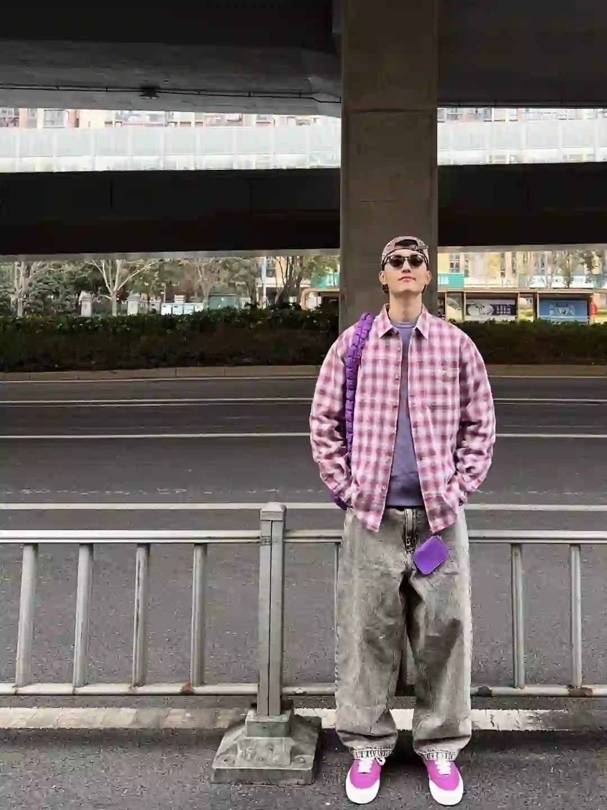
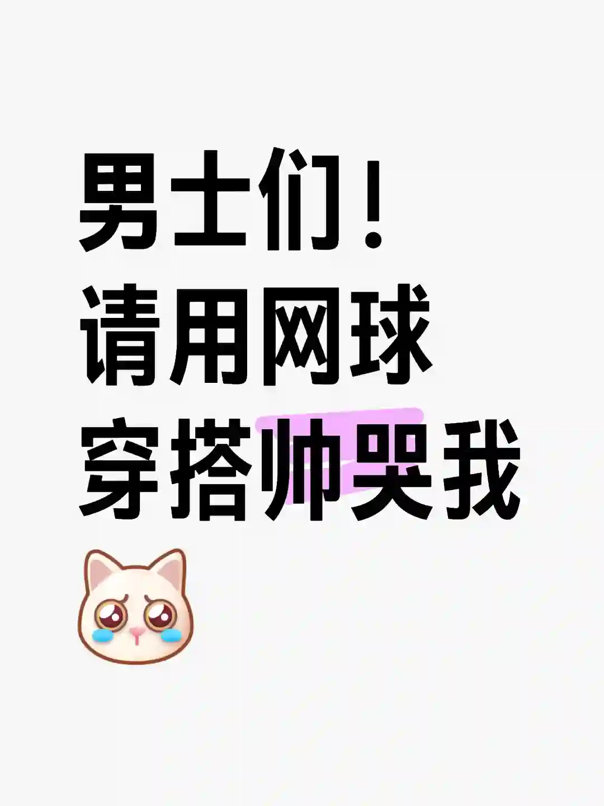
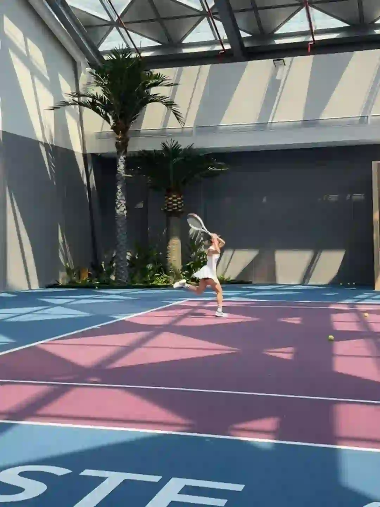

2026年5月1日
05月01日报告
生成时间：2026-05-01 · 范围：时尚 / 穿搭 / 网球
今日参考账号：Heywonc / 大哲说（知昂） / 负像之诗
今日高信号标题：你说灰色是你最爱的颜色 ｜ 选对字体让你视频高级感翻倍 ｜ 100位宝藏摄影大师 | jorgemchagas
竞品策略变化：未命中监控竞品样本
今日高信号标题：你说灰色是你最爱的颜色 ｜ 选对字体让你视频高级感翻倍 ｜ 100位宝藏摄影大师 | jorgemchagas
竞品策略变化：未命中监控竞品样本
时尚 · 01
你说灰色是你最爱的颜色
⭐ 1926
👍 10537
今天可学
- 内容结构：人物 + 4图，更像单点表达
- 收藏与点赞较平衡，可学选题包装，但仍需补强可执行细节
- 正文入口：来到我的舒适区 又又又officesiren上了 审核您好，正常穿搭正常光线室外正常拍摄，无任何不良引导～非常感谢🫶🏻
- 标签聚焦：#氛围感 / #拍照姿势不重样 / #时髦精的OOTD / #高级感
时尚 · 02
选对字体让你视频高级感翻倍
⭐ 1135
👍 839
今天可学
- 内容结构：视频封面 + 视频，更像视频示范/单点表达
- 收藏效率高，说明用户把它当成可复用模板/知识卡，不只是刷到即过
- 评论活跃，适合加入观点冲突、对比案例或常见误区来拉讨论
- 标签聚焦：#大哲说IP / #大哲IP研究院 / #设计师IP / #家居IP
时尚 · 03
100位宝藏摄影大师 | jorgemchagas
⭐ 956
👍 3946
今天可学
- 内容结构：未判定 + 0图，更像单点表达
- 收藏效率高，说明用户把它当成可复用模板/知识卡，不只是刷到即过
- 评论活跃，适合加入观点冲突、对比案例或常见误区来拉讨论
- 正文入口：（正文为空或未取到）

时尚 · 04
40+男人的终极指标，拿捏好高级感
⭐ 845
👍 1242
今天可学
- 内容结构：未判定 + 4图，更像单点表达
- 收藏效率高，说明用户把它当成可复用模板/知识卡，不只是刷到即过
- 评论活跃，适合加入观点冲突、对比案例或常见误区来拉讨论
- 标签聚焦：#英伦风 / #男士穿搭技巧 / #男士穿搭 / #绅士的品格
时尚 · 05
“秀场积累”Emporio Armani 26秋冬时装秀
⭐ 674
👍 1269
今天可学
- 内容结构：未判定 + 0图，更像单点表达
- 收藏效率高，说明用户把它当成可复用模板/知识卡，不只是刷到即过
- 正文入口：（正文为空或未取到）
时尚赛道今日方法论
- 样本依据：选对字体让你视频高级感翻倍 / 100位宝藏摄影大师 | jorgemchagas
- 当天结构信号：未判定封面 + 4图 最强；优先学习样本 4 条，低收藏流量样本 0 条。
- 时尚赛道今天跑出来的是“审美判断 + 资料感整理”：像 选对字体让你视频高级感翻倍 这类高收藏样本，核心不是讲步骤，而是把趋势、风格线索和案例并排给足，用户才愿意以 135.3% 的收藏率反复回看。
- 执行建议：标题先抛出趋势/风格判断，再给明确收益；正文少讲空泛氛围，多给风格标签、对照案例和可复看的视觉结论，让内容更像灵感资料卡。
今日参考账号：查理叔叔 / 周戴王 / Shanghai sights
今日高信号标题：👨🏻40+叔叔｜5套男生穿搭学会蓝色搭卡其色 ｜ 穿搭合集｜2025的穿搭回顾～ ｜ 上海秋冬男士街拍年度18图（秋冬篇）
竞品策略变化：未命中监控竞品样本
今日高信号标题：👨🏻40+叔叔｜5套男生穿搭学会蓝色搭卡其色 ｜ 穿搭合集｜2025的穿搭回顾～ ｜ 上海秋冬男士街拍年度18图（秋冬篇）
竞品策略变化：未命中监控竞品样本

穿搭 · 01
👨🏻40+叔叔｜5套男生穿搭学会蓝色搭卡其色
⭐ 1125
👍 1562
今天可学
- 内容结构：文字卡 + 9图，更像资料型合集
- 收藏效率高，说明用户把它当成可复用模板/知识卡，不只是刷到即过
- 正文入口：蓝色搭配卡其色穿搭教程，会穿真的很简单
- 标签聚焦：#穿搭合集 / #OOTW / #胶囊衣橱 / #男生休闲风穿搭

穿搭 · 02
穿搭合集｜2025的穿搭回顾～
⭐ 869
👍 2861
今天可学
- 内容结构：文字卡 + 9图，更像资料型合集
- 收藏效率高，说明用户把它当成可复用模板/知识卡，不只是刷到即过
- 评论活跃，适合加入观点冲突、对比案例或常见误区来拉讨论
- 正文入口：迟到的年度回顾 分享一下今年一些喜欢的穿搭 叠穿｜色彩｜工装｜ 2026的目标，做一些新内容✌️
- 标签聚焦：#工装穿搭 / #男生穿搭 / #穿搭合集 / #Ootd

穿搭 · 03
上海秋冬男士街拍年度18图（秋冬篇）
⭐ 624
👍 2829
今天可学
- 内容结构：人物 + 18图，更像资料型合集
- 收藏效率高，说明用户把它当成可复用模板/知识卡，不只是刷到即过
- 评论活跃，适合加入观点冲突、对比案例或常见误区来拉讨论
- 标签聚焦：#城市氛围感穿搭 / #ootd每日穿搭 / #上海街拍 / #街拍穿搭
穿搭 · 04
爹系穿搭｜杂灰针织开衫
⭐ 533
👍 1322
今天可学
- 内容结构：人物 + 0图，更像单点表达
- 收藏效率高，说明用户把它当成可复用模板/知识卡，不只是刷到即过
- 评论活跃，适合加入观点冲突、对比案例或常见误区来拉讨论
- 正文入口：（正文为空或未取到）

穿搭 · 05
他真的好会穿！都市男生的百搭教科书
⭐ 514
👍 1589
今天可学
- 内容结构：文字卡 + 9图，更像资料型合集
- 这条流量带有明显外部加成，只拆内容结构与包装，不原样复制流量来源
- 正文入口：如果要给 _dong.su 的穿搭总结一个关键词，就是“百搭不平庸”。作为潮流玩家，他的造型简洁实用，但从不流于大众。他善用韩系高街品牌混搭，既有基本款，又时不时用Oversize…
- 标签聚焦：#潮流REDVibe / #ootdinspo / #潮流POV / #每天一个穿搭灵感
穿搭赛道今日方法论
- 样本依据：👨🏻40+叔叔｜5套男生穿搭学会蓝色搭卡其色 / 穿搭合集｜2025的穿搭回顾～
- 当天结构信号：文字卡封面 + 9图 最强；优先学习样本 4 条，低收藏流量样本 0 条。
- 穿搭赛道今天最有效的是“整套可抄作业方案”：高收藏样本 👨🏻40+叔叔｜5套男生穿搭学会蓝色搭卡其色 说明，只要场景清楚、look 数量够多、搭配结果一眼能看懂，就更容易拿到 72.0% 级别的收藏反馈。
- 执行建议：优先做通勤/职业/一周不重样/套装盘点这类清单式内容；封面先给完整上身结果，图组里再拆单品变化和搭配理由，不要只发单套氛围图。
- 风险提醒：他真的好会穿！都市男生的百搭教科书 已标记为 [不可复制]，只拆结构，不作为明日选题原样跟进。
今日参考账号：Takuya Komura 小村拓也 / 布吉岛🎾 / wowfrank
今日高信号标题：all black🎾🐦 ｜ 男士们！请用网球穿搭帅哭我[抽泣R] ｜ 网球穿搭分享🎾
竞品策略变化：未命中监控竞品样本
今日高信号标题：all black🎾🐦 ｜ 男士们！请用网球穿搭帅哭我[抽泣R] ｜ 网球穿搭分享🎾
竞品策略变化：未命中监控竞品样本
网球 · 01
all black🎾🐦
⭐ 741
👍 3827
今天可学
- 内容结构：未判定 + 0图，更像单点表达
- 收藏与点赞较平衡，可学选题包装，但仍需补强可执行细节
- 正文入口：（正文为空或未取到）

网球 · 02
男士们！请用网球穿搭帅哭我[抽泣R]
⭐ 518
👍 1119
今天可学
- 内容结构：人物 + 1图，更像单点表达
- 收藏效率高，说明用户把它当成可复用模板/知识卡，不只是刷到即过
- 评论活跃，适合加入观点冲突、对比案例或常见误区来拉讨论
- 标签聚焦：#网瘾是网球的网 / #网球热土 / #运动男孩 / #运动的男人

网球 · 03
网球穿搭分享🎾
⭐ 704
👍 1783
今天可学
- 内容结构：视频封面 + 视频，更像视频示范/单点表达
- 收藏效率高，说明用户把它当成可复用模板/知识卡，不只是刷到即过
- 评论活跃，适合加入观点冲突、对比案例或常见误区来拉讨论
- 正文入口：穿着我的新衣服上课去了
- 标签聚焦：#ootd / #男生穿搭 / #网球穿搭

网球 · 04
好像搞到了苏州最美网球场🎾
⭐ 152
👍 249
今天可学
- 内容结构：人物 + 9图，更像资料型合集
- 收藏效率高，说明用户把它当成可复用模板/知识卡，不只是刷到即过
- 评论活跃，适合加入观点冲突、对比案例或常见误区来拉讨论
- 标签聚焦：#Wilson / #网球 / #网球场地 / #一起来打球

网球 · 05
来打球还是被球打?
⭐ 280
👍 2074
今天可学
- 内容结构：人物 + 9图，更像资料型合集
- 收藏与点赞较平衡，可学选题包装，但仍需补强可执行细节
- 评论活跃，适合加入观点冲突、对比案例或常见误区来拉讨论
- 正文入口：周末北京终于暖起来，可以短裤短袖好好打球了，下个月就法网了，红土走起，白色polo搭深蓝的撞色是最适合红土球场的经典穿搭，polo轻奢，6寸短裤显腿长，打完直接赴约聚会也OK～
- 标签聚焦：#体育生 / #美式穿搭 / #运动系质感风 / #Wilson
网球赛道今日方法论
- 样本依据：男士们！请用网球穿搭帅哭我[抽泣R] / 网球穿搭分享🎾
- 当天结构信号：人物封面 + 9图 最强；优先学习样本 3 条，低收藏流量样本 0 条。
- 网球赛道今天胜出的不是热闹球场感，而是“动作纠错/装备收益/新手可执行”：高收藏样本 好像搞到了苏州最美网球场🎾 证明，只要用户能马上拿去练，收藏率就能来到 61.0%。
- 执行建议：标题写清动作部位、错误修正或装备收益；内容里给慢动作、步骤和上场场景。明星/赛事样本只借包装，不把热点本身当方法论。
- 自动抽取规则：仅收录收藏率 >20% 且未被标记为 [不可复制] 的标题模板
- 写入目标：/Users/zhangxiaosong/shared/context/xhs-knowledge/topics/title-templates.md
- 把今天高收藏、高可复制的打法优先塞进明日发帖计划
- 竞品若连续两天从展示型转向教程/资料型，单独开策略变更记录
- 对被标注 [不可复制] 的样本，只拆结构，不抄流量来源